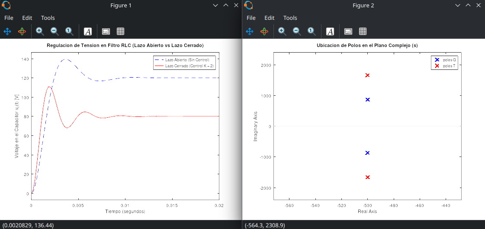

Proyecto de Investigación Aplicada • Docente: Prof. Herberth Córdoba Alvarez • 2026
Es un sistema eléctrico local y autónomo que puede funcionar conectado a la red general o de manera aislada (modo “isla”), asegurando suministro continuo de energía limpia.
Componentes principales:
En una microrred solar, el convertidor o inversor transforma la corriente continua (CC) de los paneles o baterías en corriente alterna (CA) utilizable y regula el flujo y la estabilidad eléctrica del sistema.
Cambia la corriente continua (CC) generada por los módulos fotovoltaicos o almacenada en baterías a corriente alterna (CA) para alimentar cargas y equipos estándar.
Establece por sí mismo la tensión y la frecuencia de la microrred, algo clave cuando opera de forma aislada o en modo isla.
Mide la señal de la red e inyecta corriente sincronizada, desconectándose automáticamente ante fallas por seguridad.
Ajusta el punto de máxima potencia de los paneles, administra la carga/descarga de baterías y prioriza el consumo solar.
Supervisa parámetros eléctricos, aplica protecciones ante fallas o pérdidas de red y permite monitorear el rendimiento en tiempo real.
Filtro RLC de etapa de potencia: Compuesto por el inductor L, el capacitor C y la carga resistiva R donde se regula el voltaje.
Puente inversor / convertidor de potencia: Transistores (IGBT/MOSFET) conmutados por modulación de ancho de pulso (PWM).
Divisor resistivo / sensor de tensión: Mide continuamente el voltaje instantáneo en el capacitor vc(t).
Controlador Proporcional / PI: Compara el voltaje deseado (Vref) contra el medido (vc) y ajusta el ciclo de trabajo.
Variaciones de carga e irradiancia: Conexión o desconexión brusca de equipos en la microrred o caídas repentinas de sol.
*Al ser R, L y C componentes lineales e invariantes en el tiempo, el sistema es lineal directo y no requiere linealización por Serie de Taylor.
Comparando con G(s) = b0 / (s2 + a1s + a0) en Forma Canónica Controlable (b0 = a0 = 1/(LC) = 106, a1 = 1/(RC) = 1000):
| 0 | 1 |
| −a0 | −a1 |
| 0 | 1 |
| −106 | −1000 |
| 0 |
| 1 |
| b0 | 0 |
| 106 | 0 |
| 0 |
Código Fuente Oficial (Codigo1.m):
clear; clc; close all;
pkg load control;
% 1. Parámetros físicos del filtro RLC
R = 10; % Resistencia de carga (Ohmios)
L = 0.01; % Inductor (10 mH)
C = 0.0001; % Capacitor (100 uF)
K = 2; % Ganancia proporcional del controlador
% 2. Función de Transferencia en Lazo Abierto G(s)
num = [1/(L*C)];
den = [1, 1/(R*C), 1/(L*C)];
G = tf(num, den)
% 3. Matrices de Espacio de Estados (A, B, C, D) y Polos
sys_ss = ss(G);
[A, B, C_mat, D] = ssdata(sys_ss)
polos_lazo_abierto = eig(A)
% 4. Sistema en Lazo Cerrado T(s) con ganancia K
T = feedback(K * G, 1)
polos_lazo_cerrado = pole(T)
% 5. Gráfica comparativa de Respuesta al Escalón (120 V)
figure(1);
step(120 * G, 'b--', 120 * T, 'r-', 0.02);
grid on;
title('Regulacion de Tension en Filtro RLC (Lazo Abierto vs Lazo Cerrado)');
xlabel('Tiempo (segundos)');
ylabel('Voltaje en el Capacitor v_c(t) [V]');
legend('Lazo Abierto (Sin Control)', 'Lazo Cerrado (Control K = 2)');
% 6. Gráfica de Mapa de Polos y Ceros
figure(2);
pzmap(G, 'b', T, 'r');
grid on;
title('Ubicacion de Polos en el Plano Complejo (s)');
Capturas de Verificación en Octave:

En la Figura 1 se valora tanto el lazo abierto como el lazo cerrado; la curva azul representa el lazo abierto, mientras que la roja corresponde al lazo cerrado.
En lazo abierto el voltaje del capacitor sube hasta su punto máximo de 140 V y luego se estabiliza alrededor de los 120 V. Por otro lado, el lazo cerrado responde con mayor rapidez, alcanzando un pico máximo cercano a los 110 V y estabilizándose en los 80 V.
Esta diferencia de 40 V respecto a los 120 V esperados se debe al error en estado estacionario propio de usar únicamente un controlador proporcional (K = 2), lo que indica que en una microrred real conviene agregar una acción integral (controlador PI) para llevar la salida exactamente a 120 V.
En la Figura 2 comprobamos que tanto los polos azules (−500 ± 866j) como los rojos (−500 ± 1658j) tienen una parte real negativa de −500 en el eje horizontal.
Al ubicarse en el semiplano izquierdo, el filtro RLC es totalmente estable: ante variaciones bruscas en los paneles solares o en la carga, las oscilaciones se amortiguan por sí solas en aproximadamente 12 ms sin riesgo de descontrol.